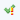

Fix the Consistency Checker Errors
To fix the errors generated by running the tasks, do one of the following:
- Click Fix at the top of the Consistency Checker – this fixes all the errors. Errors that cannot be resolved or fixed. The following icons display next to the error, letting you know the status of the fix:
- - Completed Successfully

- Completed with Findings- - Completed with Errors
- - Canceled
- - Failed
- Right-click on an individual error, and from the contextual menu, select Fix.